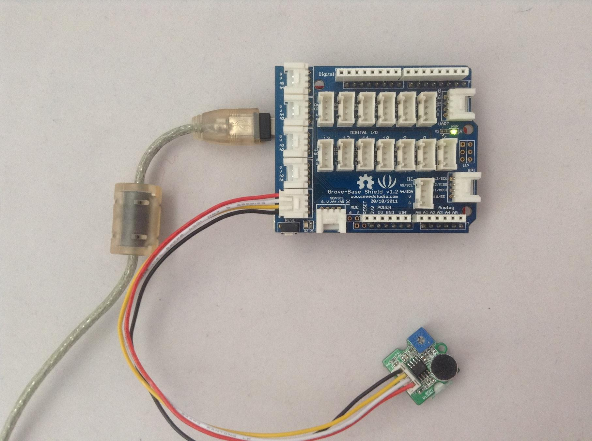
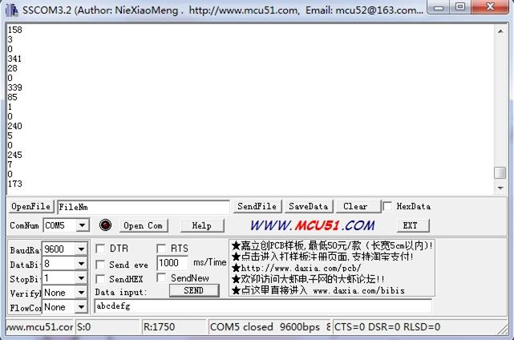
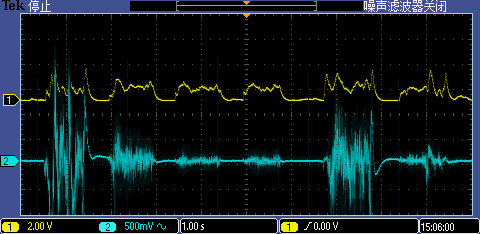
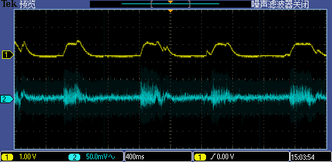

The Grove - Loudness Sensor is designed to detect the loudness of environmental sound. Based on amplifier LM2904 and a built-in microphone, it amplifies and filters the high frequency signal that received from the microphone, and outputs a positive envelop. This will make for Arduino’s signal acquisition. The output value depends on the level of sound input. In order to avoid unnecessary signal disturbances, input signal will go through two times’ filtering inside the module. Lastly, there is a screw potentiometer that enables manual adjustments to the output gain.
Previous Version: v0.9b
Model:SEN02281P
This module uses the chip LM2904 to amplify the electronic signal produced by the mini microphone. At last, you’ll get the analog-to-digital conversion value. Let's try to read the output value.

int val;
void setup()
{
Serial.begin(9600);
}
void loop()
{
analogRead(0);
delay(10);
val = analogRead(0);
Serial.println(val);
delay(200);
}

The blue line is the original signal from microphone and the yellow is the sig pin of Loudness Sensor. It is the original signal envelope that the module outputs. Here is the test screenshot from the oscilloscope.
Blowing to the sensor:

Speak to the sensor：

1.You should have got a raspberry pi and a grovepi or grovepi+.
2.You should have completed configuring the development enviroment, otherwise follow here.
3.Connection
4.Navigate to the demos' directory:
cd yourpath/GrovePi/Software/Python/
nano grove_loudness_sensor.py # "Ctrl+x" to exit #
import time
import grovepi
# Connect the Grove Loudness Sensor to analog port A0
# SIG,NC,VCC,GND
loudness_sensor = 0
while True:
try:
# Read the sound level
sensor_value = grovepi.analogRead(loudness_sensor)
print "sensor_value =", sensor_value
time.sleep(.5)
except IOError:
print "Error"
5.Run the demo.
sudo python grove_loudness_sensor.py
Grove - Loudness Sensor Eagle File
Grove - loudness sensor pdf
LM2904DR Datasheet
Copyright (c) 2008-2016 Seeed Development Limited (www.seeedstudio.com / www.seeed.cc)